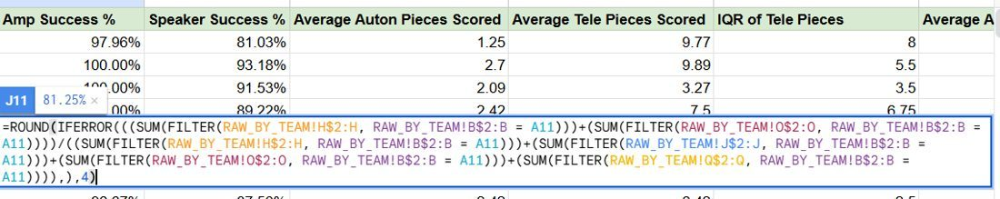

Strategy & scouting system
FRC Team 1771 · 2022–2026
- Role
- Strategy lead; team and alliance captain; driver
- Dates
- Aug 2022 – May 2026
- Stack
- JotForm collection tools, Google Sheets analytics backend
- Scale
- 100,000+ data points per year; 80+ scouts trained to run it live
- Results
- Curie Division champion and 4th overall, 2025 World Championship; #1-ranked autonomous robot in the world, 2024; three consecutive state championships, 2024–2026
My head-to-head predictor outperformed FRC’s global standardized match predictor. That is the claim I care about most on this page, because it is measured against a real baseline that thousands of teams use rather than against nothing.
-
100,000+Data points processed per year
-
80+Scouts trained to run the system live
The problem
An FRC alliance selection is a draft you get one shot at, made from incomplete information about sixty-odd robots you have watched for two minutes each. Teams handle this with scouting: humans in the stands recording what every robot does, every match. The failure mode is not collecting the data. It is that the data arrives noisy, late, and in a shape nobody can make a decision from before the draft closes.
I built the team’s strategy department from scratch to close that gap — collection, processing, and the tools that turn it into a call someone can make on the spot.
Collection
I designed more than a dozen JotForm collection tools across four seasons — seven for 2024 (three qualitative, four quantitative), eight for 2025, eleven for 2026 — and grew them season over season as we learned which fields people actually filled in correctly under time pressure.
Everything feeds a Google Sheets backend split into a raw layer and a processed layer. The separation is what makes the system survivable: raw submissions are never edited, so a processing bug is a bug in a formula rather than a loss of the underlying record, and a scout entering something wrong cannot corrupt anything downstream of their own row.

Analysis tools
On top of the processed layer I built the tools we actually made calls from:
- Head-to-head predictor — predicted match outcomes from the accumulated per-team records, and outperformed the standardized FRC match predictor used globally.
- Top 75 — ranked every team in our division by success rate, interquartile range and maximums. Ranking on IQR alongside averages is the part that mattered: for alliance selection, a robot that scores moderately every match is often worth more than one that averages higher on a mix of blowouts and breakdowns.
- Auton by match / team — pulled autonomous routine data by driver station, so we could tell whether a robot’s autonomous would conflict with ours before we picked it.
These fed alliance selection and match strategy at every event from 2023 on, including the three consecutive state championships and the Curie Division championship in 2025. I drove Blitz in competition while continuing to make strategy calls live.
Training
The system is only as good as the eighty-plus people running it in the stands, so training was not a side task. I taught more than 200 students across three years — what the game rewards, how to record an observation consistently, and how the hardware and software decisions on our own robot follow from game-theory calls we make before the season starts.
What I would change
A Google Sheets backend was the right call for a team where the next maintainer had to be able to open it and understand it. It is also the ceiling on this project: there is no schema enforcement, so a renamed column is a silent wrong answer rather than an error, and every correctness guarantee lives in formulas that no one can test in isolation.
I would keep collection where it is and move the processed layer to a real database with typed columns and a migration path, then keep a Sheets view on top of it so the tool a scout opens does not change. The mistake I made was treating “everyone can read it” and “it is a spreadsheet” as the same requirement.